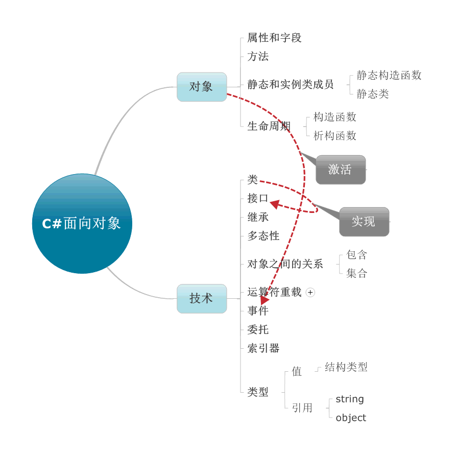

C#中面向对象
面向对象程序设计（英语：Object-oriented programming，缩写：OOP），指一种程序设计范型，同时也是一种程序开发的方法。它将对象作为程序的基本单元，将程序和数据封装其中，以提高软件的重用性、灵活性和扩展性。

抽象:
抽象是从众多的事物中抽取出共同的、本质性的特征，而舍弃其非本质的特征。
继承:
继承是指一个对象直接使用另一对象的属性和方法。
C#中索引器的作用:
C#通过提供索引器，可以象处理数组一样处理对象。特别是属性，每一个元素都以一个get或set方法暴露。索引器允许类或结构的实例按照与数组相同的方式进行索引。索引器类似于属性，不同之处在于它们的访问器采用参数。
委托：
委托是一种在对象里保存方法引用的类型，同时也是一种类型安全的函数指针。委托是引用类型的变量，他可以包含对方法的引用，当程序必须通过调用一个方法来执行某个操作，但在编译时不知道该方法是什么时，就可以使用委托。委托允许在程序运行时指定调用的方法，委托的特点是面向对象的，类型是安全的。
事件：
事件是一种特殊的委托
运算符重载：
运算符重载，就是对已有的运算符重新进行定义，赋予其另一种功能，以适应不同的数据类型。